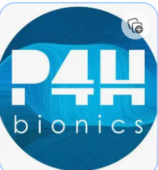
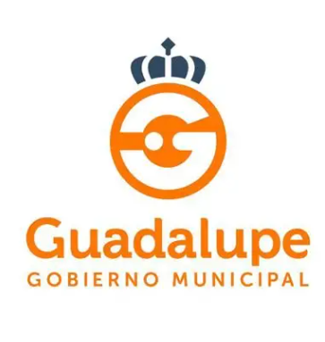

Curriculum Vitae
Aquí puedes descargar mi CV en PDF o consultar un resumen rápido de mi experiencia y formación.
Descargar CV (PDF) Ver CV en líneaFormación
 01
01
Bootcamp Generation México
Desarrolladora java full stack
julio 2026 - octubre 2026
Programa intensivo de empleabilidad enfocado en desarrollo de software, combinando habilidades técnicas y profesionales.
 02
02
Facultad de Ingeniería Mecánica y Eléctrica
Ingeniería en Mecatrónica
agosto 2021 - junio 2026
Grupo de excelencia académica, top 100 mejores estudiantes, sociedad estudiantil de Mecatrónica.
En proceso de titulación.

03P4HBionics
Cursos especializados en tecnología biónica
octubre 2024 - actualidad
Diplomado en Tecnología Biónica Avanzada, con enfoque en diseño de prótesis, sensores y sistemas de control biónico.
Bedu Technolochicas
Ciencia de datos
octubre 2024 - febrero 2025
Especialización intensiva de recopilación, procesamiento y análisis de grandes volúmenes de información mediante el uso de código avanzado.
Experiencia
ZF Electronic Systems Monterrey
Practicante EHS y Facilities
junio 2025 - junio 2026
- Desarrollé un sistema automatizado de gestión de tickets, digitalizando el flujo de mantenimiento y procesando más de 240 órdenes, lo que mejoró la trazabilidad y eficiencia del proceso.
- Lideré el proyecto de automatización de programación para UMA con Control Basic y BMS, con el objetivo de reducir el consumo energético del variador de frecuencia en un 10% y el scrap en un 8% anualmente.
- Gestioné planes de mantenimiento, órdenes de trabajo y tareas en SAP (módulos PM y MM), implementando una sábana de mantenimiento con costos y planeación, y optimizando el módulo de compras para agilizar el proceso de órdenes de compra.
- Elaboré documentación técnica para actividades de validación de componentes, aplicando código, diagramas de flujo y de control, así como estándares NPM y CEA.
- Capacité a múltiples contratistas mediante inducciones y lideré proyectos de la comisión mixta de seguridad, colaborando con equipos y líderes de múltiples departamentos.
- Programé en Power BI usando Python para mejorar el monitoreo de variables mediante dashboards.
- Apliqué herramientas de IA (Copilot) en la validación y seguimiento de documentación técnica.
- Implementé capacitación como brigadista en 4 brigadas: primeros auxilios, combate contra incendios, búsqueda y rescate y evacuación.

02Secretaría de Salud - Clinica Médica Municipal Guadalupe
Practicante servicio social en dirección
diciembre 2024 - mayo 2025
- Lideré proyectos de campañas de salud
- Capacité al personal mediante inducciones en el uso de herramientas como Excel, Microsoft Office y Canva, así como en documentación de seguimiento y elaboración de reporte.
- Revisé con constante orientación.
Languages
Inglés B2 Intermedio
Fránces A2 Básico